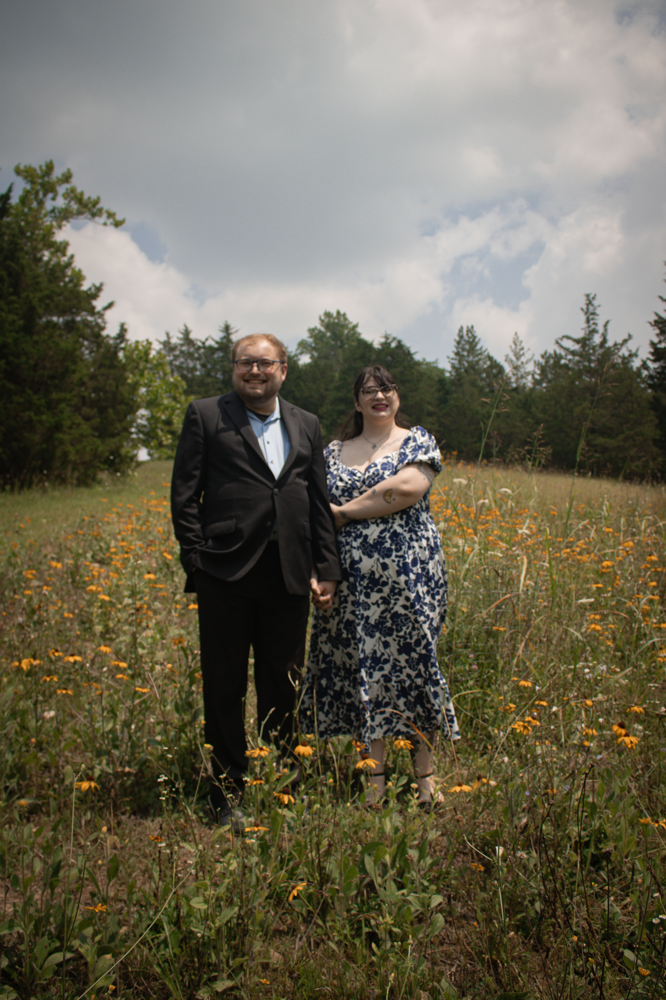

Lampros Labs
- Chief Technology Officer
- Software Development Manager
- Lead Backend Developer
Developer · Author · Cincinnati, Ohio
I build software,
write romance, and keep
a small ecosystem alive.
Currently Chief Technology Officer at Lampros Labs. Married, with two cats, three snails, and about two hundred worms.
Say hello
Updated
Fiction / Romance
After an abusive relationship ends, Sam Hatfield enters rehab and finds herself drawn to another woman. But what will that connection mean when she returns home?
Read Drunk On LoveShe had done it again. The living room was covered in bottles of various types, and she couldn’t even stand. Katie was yelling about something again, but she barely heard it through the fog of being drunk.
“Katie, I don’t know what you’re saying!” Sam shouted, a little louder than she meant to.
“I’m trying to tell you you’re being an idiot.” Katie guffawed, bending over to pick up a nearly-empty vodka bottle.
Sam saw the last sips in it and exclaimed, reaching out a hand for it like a baby would do.
“I’m not giving this to you,” Katie said, opening it and pouring it down the sink in the kitchen.
“What is wrong with you!” Sam screamed, and someone banged on the ceiling above them.
“Shut the hell up,” Katie said quietly, angrily, like she often did.
“I don’t want to!” Sam said, quieter this time. “I want you to leave me alone!”
“Oh, don’t worry, I’ll leave you alone,” she said, laughing a little bit.
Why is she laughing? Sam thought, trying to discern what was going on through the brain fog she had.
“You’re being so stupid,” Sam said. “Why are you being like this?”
“I can’t stand you like this. Can you just go to bed? Don’t be questioning my motives. What the hell even happened that caused this?”
“Bad day at work,” Sam said, leaning back against the couch and closing her eyes. “Customers were mean.”
“That’s working in a restaurant, sweetheart,” she said, the “sweetheart” sounding angrier than it ever had before.
Why is she treating me like this, why is she doing this? Sam’s brain repeated over and over.
“I know that,” Sam slurred, taking a long sip out of a bottle of vodka stashed inside the couch.
Katie threw up her hands in defeat, storming out of the room and into the bedroom. She slammed the door and Sam heard the lock click into place.
From backend development to leading a technology team.
Promoted from Student Desktop Support Technician.
PHP · JavaScript · Java · Python · Swift · MySQL · Kotlin
Laravel · WordPress · WooCommerce
I’m available for freelance work on a case-by-case basis. If you have a project in mind, I’d love to hear about it.